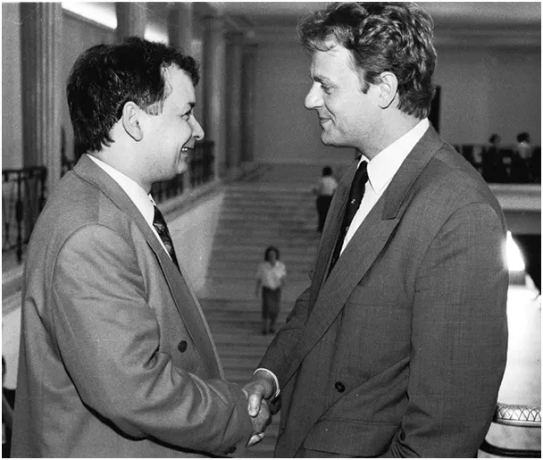
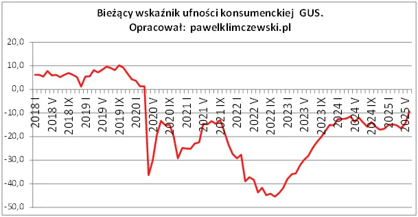

Meldujemy wykonanie zadania, czyli Kaczor Donald 3.0
Było fatalnie, jest źle! Zawsze latem wskaźnik optymizmu konsumenckiego względnie rośnie, bo jest to najkrócej rzecz ujmując proporcja optymistów do pesymistów. Słońce poprawia nasze nastroje i gdy jesteśmy pytani o nasze perspektywy późną wiosną widzimy świat lepszym.

Inaczej nie potrafię wytłumaczyć takiego skoku czerwcowego w obiektywnie pogarszającej się polskiej rzeczywistości. Wczoraj na szczycie NATO udało się przeforsować amerykańskiemu kartelowi zbrojeniowemu podwojenie wydatków na broń do 5% PKB w perspektywie kolejnej dekady. Oczywiście w skali budżetu państwa jest to znacznie więcej. Obecnie wydajemy kilkanaście procent na obronność, czyli zmierzamy do modelu, gdzie 1/4 budżetu lub więcej będzie zasilała armię. Czyli mamy stać się państwem jak Korea Północna skupionym na rakietach i czołgach z poborem kobiet do armii. W praktyce oznacza to podwojenie tempa zaciągania długu.

Z ustaleń szczytu NATO dumni jak wiejskie głupki są zarówno ludzi z PiS-u jak i KO, bo wiadomo, bezpieczeństwo najważniejsze. Na profilach obu partii w tej sprawie panuje niezdrowa euforia. Przez ostanie 5 lat lud nad Wisłą został tak wystraszony, że doznał pomieszania zmysłów.
Towarzysze Kaczyński i Tusk, możecie zameldować wykonanie zadania!
Paweł Klimczewski